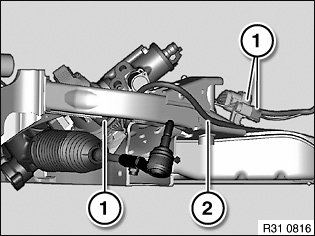
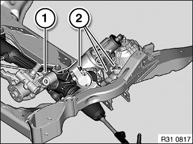
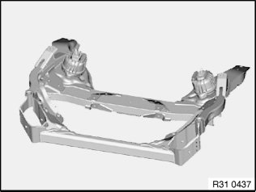

31 11 001 Replacing Front Axle Carrier
31 11 001 Replacing front axle supportImportant!
Before removing front axle support:
In order to avoid damage to lifting platform, perform weight compensation on vehicle.
Load spring strut domes with sand bags.
Warning!
Danger to life!
Secure engine in installation position with special tool to prevent it from falling down.
Necessary preliminary tasks:
^ Secure engine in installation position
^ Disconnect battery negative lead
^ Remove both front wheels
^ Remove anti-roll bar
^ If necessary, remove radiator seal
^ If necessary, remove steering gear cover on left and right
^ E88: Remove diagonal struts from mounting fixture
^ Remove lower section of steering spindle from steering gear
^ If necessary, disconnect plug connection from ride height sensor
^ If necessary, disconnect vacuum line from electric changeover valve to engine mounts at T-piece
^ Remove both tension struts from front axle support
^ Remove both control arms from front axle support
^ Remove both tie rods on steering gear

Version with active front steering:
Note:
Front axle support is lowered without hydraulic steering gear.
Disconnect plug connections (1) and unclip connecting line (2) from front axle support.

Version with active front steering:
Disconnect plug connection (1) from power steering pump and expose connecting cable up to front axle support.
Disconnect plug connections (2) on hydraulic steering gear.
Build date up to 03/2007: Disconnect plug connection on cumulative steering angle sensor.
Lower front axle support a little.
If necessary, remove heat shield over gaiter on right.
Remove steering gear from front axle support and tie up.
Lower front axle support.

Remove heat shield(s) from front axle support.
If necessary, remove wiring harness for active front steering from front axle support.
Remove both engine mounts with vacuum lines from front axle support if necessary.
Remove jacking point from front axle support.
Installation:
Use previous front axle support as a template for modifying or replacing small parts.
After installation:
^ Perform chassis alignment check
^ Carry out steering angle sensor adjustment/adjustment for active front steering